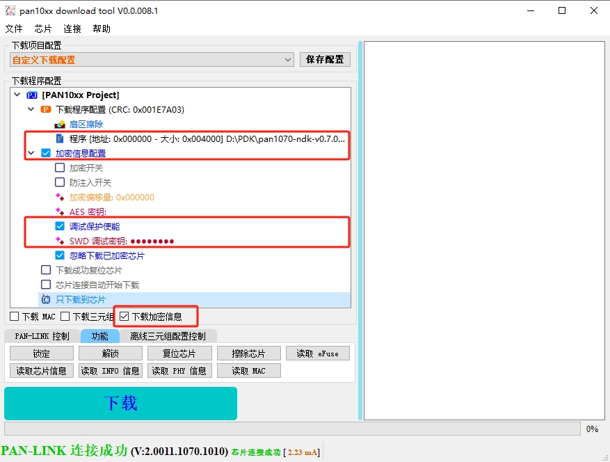
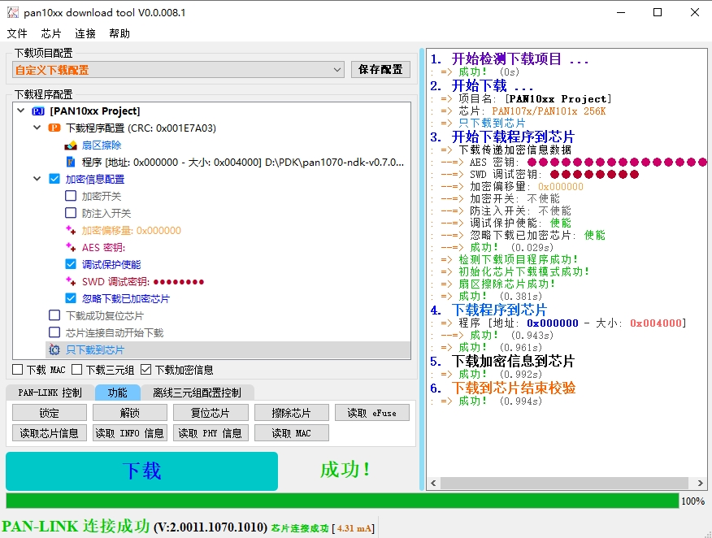
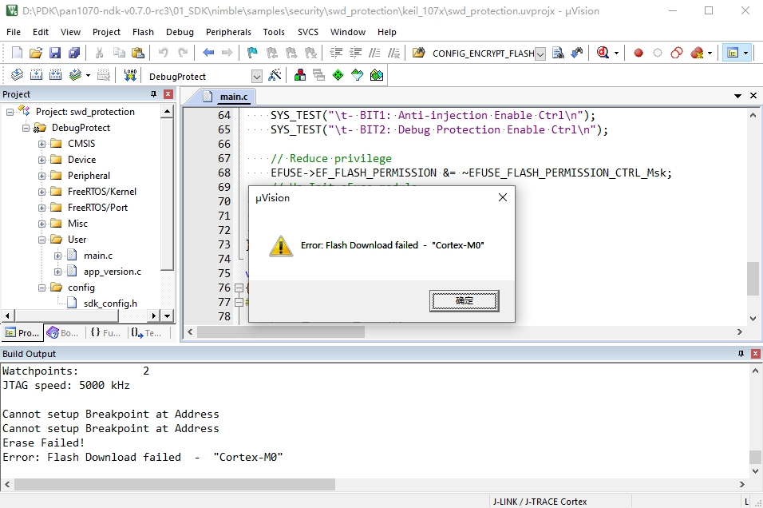
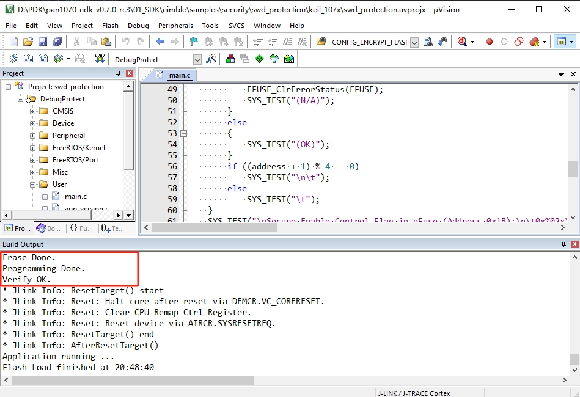
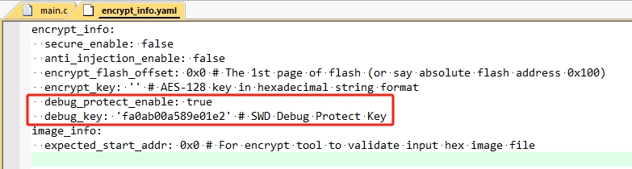

SWD Protection¶
1 功能概述¶
本例程演示芯片 SWD Debug Protect 调试保护机制。
重要
本功能需要用到 PanLink 量产烧录工具，为正常演示本例程，请确保您的 PanLink 上位机工具版本不低于 v0.0.008。
警告
本功能需要通过 PanLink 工具烧录芯片 eFuse 的特定地址，eFuse 的物理特性是同一地址只可烧录一次，无法还原，因此当某颗芯片使能 Debug Protect 功能后，其将只能通过输入正确秘钥的方式重新使能 SWD 调试和烧录功能！
2 环境准备¶
硬件设备与线材：
PAN107X EVB 核心板与底板各一块
JLink 仿真器（用于烧录例程程序）
PanLink 量产烧录工具（用于烧录 SWD 保护信息至芯片 eFuse，以及烧录例程程序至芯片 Flash）
USB-TypeC 线一条（用于底板供电和查看串口打印 Log）
杜邦线数根或跳线帽数个（用于连接各个硬件设备）
硬件接线：
将 EVB 核心板插到底板上
使用 USB-TypeC 线，将 PC USB 插口与 EVB 底板 USB->UART 插口相连
使用杜邦线将 EVB 底板上的 TX 引脚接至核心板 P16，RX 引脚接至核心板 P17
根据情况将 PanLink 或 Jlink 仿真器连接至芯片
PC 软件:
串口调试助手（UartAssist）或终端工具（SecureCRT），波特率 921600（用于接收串口打印 Log）
PanLink 上位机工具
3 编译和烧录¶
例程位置：<PAN10XX-NDK>\01_SDK\nimble\samples\security\swd_protection\keil_107x
双击 Keil Project 文件打开工程，编译成功后，使用 Keil - Flash Download 按钮，向未使能 SWD 保护功能的芯片中烧录程序。
4 例程演示说明¶
通过 Keil 将例程程序烧录至芯片后，可以看到芯片通过串口打印如下 Log：
Try to load HW calibration data.. DONE. - Chip Info : 0x1 - Chip CP Version : 255 - Chip FT Version : 6 - Chip MAC Address : E1100000101D - Chip UID : 0D0001465454455354 - Chip Flash UID : 4250315A3538380B004B554356034578 - Chip Flash Size : 512 KB Dump eFuse content after reset: Debug Protect Key in eFuse: Addr:Data Addr:Data Addr:Data Addr:Data 0x10:0x00(OK) 0x11:0x00(OK) 0x12:0x00(OK) 0x13:0x00(OK) 0x14:0x00(OK) 0x15:0x00(OK) 0x16:0x00(OK) 0x17:0x00(OK) Secure Enable Control Flag in eFuse (Address 0x1B): 0x00 Note: - BIT0: FW Encryption Enable Ctrl - BIT1: Anti-injection Enable Ctrl - BIT2: Debug Protection Enable Ctrl Done.
从上述 Log 信息可以看到，当前芯片 eFuse 中的加密保护相关位置都是没有被写入过的，读出值均为0。
断开 JLink 与芯片的连接，然后将 PanLink 连接至芯片（可能需要将芯片从 EVB 底板取下），打开 PanLink 上位机工具：：
在 下载程序配置 选项上点击右键，选择 添加程序，并加载本例程编译生成的固件（
Images\ndk_app.bin）勾选 下载加密信息配置 选项框，在出现的 加密信息配置 选项上点击右键，选择 设置加密信息配置，并加载本例程的加密配置信息文件（
encrypt_info.yaml）

PanLink 成功载入加密配置信息文件和例程固件¶
更详细的操作步骤请参考 PanLink 上位机工具文档。
点击 PanLink 上位机工具的 “下载” 按钮，即可将本工程的加密配置信息（包括 SWD 保护使能开关、SWD 保护秘钥等）和例程固件分别烧录到芯片 eFuse 和 Flash 中：

PanLink 烧录加密配置信息文件和未加密固件成功¶
eFuse 烧录成功后，复位芯片，可以看到打印的 Log 已经与之前有所不同：
Try to load HW calibration data.. DONE. - Chip Info : 0x1 - Chip CP Version : 255 - Chip FT Version : 6 - Chip MAC Address : E1100000101D - Chip UID : 0D0001465454455354 - Chip Flash UID : 4250315A3538380B004B554356034578 - Chip Flash Size : 512 KB Dump eFuse content after reset: Debug Protect Key in eFuse: Addr:Data Addr:Data Addr:Data Addr:Data 0x10:0x00(N/A) 0x11:0x00(N/A) 0x12:0x00(N/A) 0x13:0x00(N/A) 0x14:0x00(N/A) 0x15:0x00(N/A) 0x16:0x00(N/A) 0x17:0x00(N/A) Secure Enable Control Flag in eFuse (Address 0x1B): 0x04 Note: - BIT0: FW Encryption Enable Ctrl - BIT1: Anti-injection Enable Ctrl - BIT2: Debug Protection Enable Ctrl Done.
由 Log 信息可以看到：
eFuse 中存放 SWD 保护秘钥（Debug Protect Key）的地方已经无法正常读取（虽然显示为0，但实际上此处已经通过 PanLink 工具烧写过）
eFuse 中使能 SWD 保护功能的控制位（即 eFuse 0x1B 地址的 BIT2）已经被置1，表示 SWD 保护使能已经打开
此时尝试通过 Keil Download 重新烧录固件，看到提示烧录失败：

使用 Keil 烧录开启 SWD 保护的芯片¶
这是因为当前芯片的 SWD 保护功能已经开启，此时 SWD 虽然仍然能够被 JLink 连接上，但此时芯片除了解锁秘钥的寄存器以外，其他所有模块寄存器、SRAM、Flash 的操作均无法正常读写，因此 Keil 的烧录操作自然也就不会成功。同理 Keil 的 SWD 调试功能也会失效，表现上就是虽然 Keil 仍然能进入调试模式，但是已经无法从调试界面获取到有效的调试信息了。
双击执行例程目录下的
gen_jlinkscript_with_swd_unlock_key.bat脚本，以将 SWD 解锁秘钥更新至 JLinkSettings.JLinkScript 脚本文件中：void ApplyDebugKey(void) { // Write debug key to KEY Registers in eFuse module JLINK_MEM_WriteU32(0x40080068, 0x0a0000fa); // EF_VERIFY_DEBUG1 JLINK_MEM_WriteU32(0x4008006C, 0x00004f00); // EF_VERIFY_DEBUG2 JLINK_MEM_WriteU32(0x40080070, 0x00fe9e58); // EF_VERIFY_DEBUG3 JLINK_MEM_WriteU32(0x40080074, 0x00e20000); // EF_VERIFY_DEBUG4 } int AfterResetTarget(void) { JLINK_SYS_Report("AfterResetTarget()"); ApplyDebugKey(); return 0; }
gen_jlinkscript_with_swd_unlock_key.bat脚本的作用，是根据encrypt_info.yaml加密配置文件中指定的debug_key，生成一把解锁 SWD 调试功能的秘钥，并在 JLink Script 的 AfterResetTarget() 流程中，将解锁秘钥传给芯片，以重新使能 SWD 调试功能。gen_jlinkscript_with_swd_unlock_key.bat脚本内部会调用另外一个 Python 脚本，而该脚本中使用了第三方库 PyYAML，需要提前安装（Windows 下直接在 CMD 命令行中执行pip install pyyaml即可），否则会提示执行失败。
重新尝试通过 Keil Download 烧录固件，此时看到可以烧录成功了：

使用 Keil 烧录开启 SWD 保护但成功解锁的芯片¶
在 Keil 界面点击 Download 按钮的时候，Keil 首先会复位芯片，在芯片复位后触发 Jlink Script 脚本的 AfterResetTarget() 流程，将 SWD 解锁秘钥配置到芯片的解锁寄存器中，然后芯片的 SWD 调试功能恢复正常，于是 Keil 即可正常执行后续的烧录过程。
5 开发者说明¶
本例程的加密信息配置文件（encrypt_info.yaml）内容如下:

Encrypt Info File¶
其中各个 item 解释如下：
secure_enable: false：不使能固件加密功能anti_injection_enable: false：不使能防注入保护功能encrypt_flash_offset: 0x0：不配置 Encrypt Flash Offsetencrypt_key: ''：不配置加密秘钥debug_protect_enable: true：使能 SWD Debug Protect 功能debug_key: 'fa0ab00a589e01e2'：配置 SWD Debug Protect 秘钥，8 字节长度的 hex 格式expected_start_addr: 0x0：不生效，可忽略
警告
本文件中包含明文的加密秘钥（debug_key），一定要妥善保管，不可随意外传，以防密钥泄露！
本例程还提供了一个单独的
gen_encrypt_info_enc_bin.bat可用于生成一个二次加密后的encrypt_info_enc.bin文件，此文件中会对秘钥添加扰码，因此在 PanLink 载入加密信息的过程中建议使用此文件，而不是明文的 yaml 文件。
使能 SWD 调试保护功能，只需使用 PanLink 将加密信息配置文件（encrypt_info.yaml）烧录至目标芯片的 eFuse 中即可，无需修改固件程序
对于已经使能 SWD 调试保护功能的芯片来说，解锁的办法本质上是在 SWD 调试之前，将解锁秘钥配置到芯片的解锁寄存器中，本例程演示的是通过 JLink Script 脚本的方式配置，在实际场景中也可以根据需要通过其他方式解锁，如 JFlash 的 Init 脚本、JLink 命令行，或者其他 SWD 调试工具均可以
同样地，对于已经使能 SWD 调试保护功能的芯片，如果想再次通过 PanLink 工具向芯片烧录固件程序，则应同时加载
encrypt_info.yaml加密信息配置文件和待烧录的固件程序，否则烧录将会失败